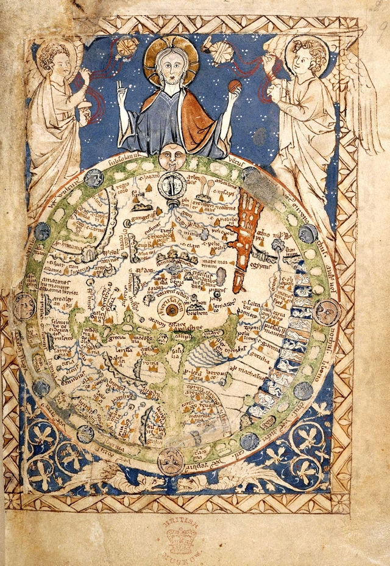

Regnum Christi
Un jeu médiéval, historique et fantastique
Ce jeu est pensé pour raconter autour d’une table, entre quelques joueurs, les péripétie de héros similaires à ceux des contes et légendes médiévaux. Il se situe dans notre moyen-âge, centré sur l’Europe chrétienne, le Royaume du Christ désigné par le titre. Il est prévu pour jouer un Moyen-Âge historique, de Charlemagne à la Guerre de Cent Ans, avec son lot de croisades et de cathédrales, tel que vu par les gens de cette époque, avec le fantastique qui s’impose.

Documents
Ce document expose des règles de base pour le jeu, permettant d’y jouer rapidement. Sont aussi intéressants :
Inspirations
Jeux de rôle :
Livres :
- La civilisation médiévale
- Héros et merveilles du Moyen Âge
- Art & Academe
- Trois Christs
- Une histoire du diable
Articles :
Lexique
Voici un lexique de base du jeu de rôle :
- MJ
- Maître du Jeu, joueur particulier qui prépare des aventures pour les autres joueurs, maintient l’intérêt de la partie et veille au respect des règles
- PNJ
- Personnage Non Joueur, personnage de l’aventure en question dirigé par le MJ
- PJ
- Personnage Joueur, personnage de cette même aventure dirigé par un joueur non-MJ
- D6
- dé à 6 faces, cubique et numéroté de 1 à 6
- xp
- points d’eXPérience, donnés aux joueurs pour améliorer les statistiques de leur personnage après une partie
 Apr 13, 2019
Apr 13, 2019
 Edit this page
Edit this page